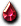
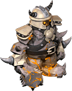

帕爾塞斯
庫修隆
盧米納
莉希涅
斯坎達倫
歐費爾
戴莫尼翁
天橋｜入口｜1樓大廳｜2樓監獄｜3樓監獄｜4樓監獄｜5樓監獄｜5樓監獄(首領區)｜6樓監獄
獎勵1｜獎勵2｜獎勵3
出現怪物
 鋼鐵狂戰士
鋼鐵狂戰士
| 鋼鐵狂戰士 | Lv | AC | MC | AAR | SAR | 掉落物品 |
| HP:9萬 | 120 | -50 | 45 | 5 | 4 | 盧米納勒頸寶珠、盧米納項鍊、  格亨納結晶、魔力恢復液1、 柯斯莫技能之水、 柯斯莫技能之水、 蛋殼三角龍召喚捲軸、格亨納寶珠(小)、格亨納信仰寶珠、[3次]各種武器1階段升級捲軸、[3次]各種防具1～2階段升級捲軸 蛋殼三角龍召喚捲軸、格亨納寶珠(小)、格亨納信仰寶珠、[3次]各種武器1階段升級捲軸、[3次]各種防具1～2階段升級捲軸 |
| 善惡值 | 信仰值 | 金錢 | 攻擊屬性 | 防禦屬性 | ||
| 312 | 312 | 1250~1300? | 隨機 | 隨機 | ||
| STR | DEX | INT | WIS | CON | ||
| 200 | 70 | 80 | 60 | 70 |
強力攻擊

狂信者| 狂信者 | Lv | AC | MC | AAR | SAR | 掉落物品 |
| HP:19萬 | 120 | 29 | 42 | 5 | 15 | 盧米納勒頸寶珠、盧米納項鍊、魔力恢復液1、柯斯莫技能之水、格亨納寶珠(小)、格亨納信仰寶珠、格亨納結晶 |
| 善惡值 | 信仰值 | 金錢 | 攻擊屬性 | 防禦屬性 | ||
| 340 | 340 | 2380 | - | - | ||
| STR | DEX | INT | WIS | CON | ||
| 200 | 70 | 160 | 60 | 70 |
骷髏守衛
| 骷髏守衛 | Lv | AC | MC | AAR | SAR | 掉落物品 |
| HP:16萬 | 120 | 30 | 40 | -20 | 15 | 盧米納勒頸寶珠、盧米納項鍊(@3～5)、格亨納結晶、魔力恢復液1、柯斯莫技能之水、 聖血、 聖血、 奧爾特非晶石、 奧爾特非晶石、 阿爾法鎖鏈(確認2個同時)、骷髏靈魂石、格亨納寶珠(小)、格亨納信仰寶珠、艾爾德阿莫爾寶石、艾爾德阿莫爾方塊、[3次]各種武器2階段升級捲軸 阿爾法鎖鏈(確認2個同時)、骷髏靈魂石、格亨納寶珠(小)、格亨納信仰寶珠、艾爾德阿莫爾寶石、艾爾德阿莫爾方塊、[3次]各種武器2階段升級捲軸 |
| 善惡值 | 信仰值 | 金錢 | 攻擊屬性 | 防禦屬性 | ||
| 680 | 680 | 2587 | 隨機 | 隨機 | ||
| STR | DEX | INT | WIS | CON | ||
| 170 | 160 | 160 | 90 | 40 |
守護目標